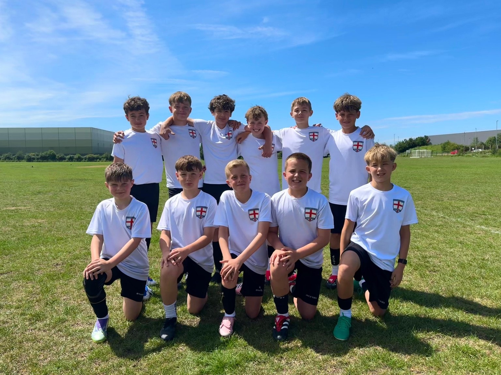

Pathway
Develop. Compete. Represent.
Our programme is designed for high-level grassroots and JPL level players who want extra challenge, professional standards and clear opportunities beyond their weekly club football.
Players train together, build relationships, experience UEFA licensed coaching and can be selected to represent South West England in regular academy fixtures, showcases and international tournaments.
Training Camps
Monthly 3-hour development camps for U8-U13 players.
02Academy Fixtures
Representative squads selected for regular academy-level games.
03Small Group Sessions
High-contact coaching for technical detail and individual development.
04Showcase Events
Opportunities to perform in front of professional academy staff.
05International Tournaments
Selected squads representing the South West overseas.

Opportunity
Built around development, not replacing your club.
Players stay registered with and committed to their current clubs. Our role is to provide an additional pathway: more coaching, more exposure, more high-level fixtures and more opportunities to grow.
Contact Us For InfoContact Us
Ask about joining South West England Representative Football.
Contact us for information on joining training camps, showcases, academy fixtures, small group sessions and tournaments.